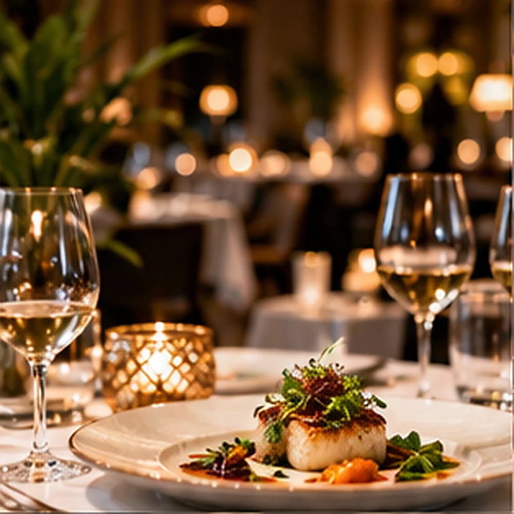
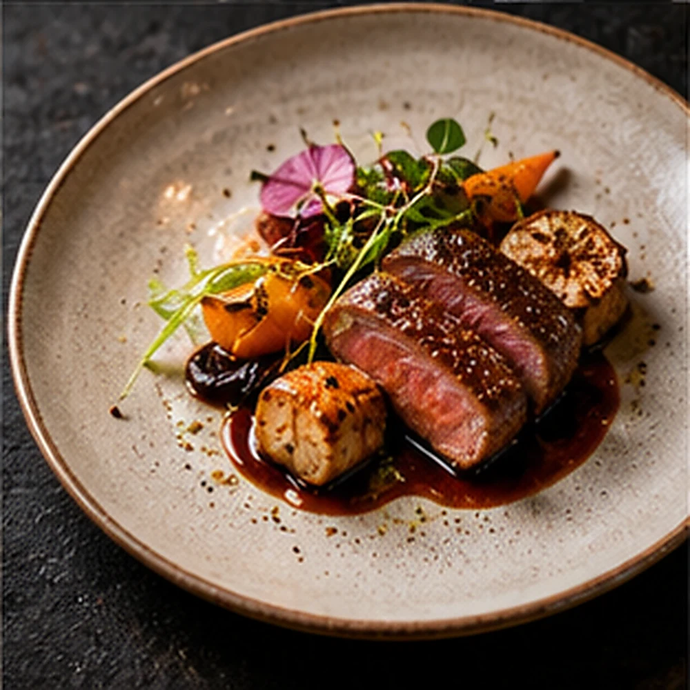

Tasting menu
An ever-evolving selection of thoughtfully composed dishes.
Discover the experience ↗
A TASTE OF THE EXTRAORDINARY
Seasonal cuisine, intimate spaces, and an unhurried sense of occasion.

01 / Menu
Discover the thoughtful presentation of services and experiences for this business concept.
An ever-evolving selection of thoughtfully composed dishes.
Discover the experience ↗
From the first bite to the final course, make it yours.
Discover the experience ↗
A private table for occasions that deserve more.
Discover the experience ↗
Demonstration content only. Offerings and availability are fictional.
CURATED / EXPERIENCE

A sample dining menu to demonstrate clear content hierarchy and reservation-oriented navigation.
02 / The Experience
An editorial dining experience built around the art of gathering.
03 / THE IDEA
Designed for this industry's real information needs: clear navigation, meaningful visual hierarchy and simple customer enquiries.
The website combines an original brand identity with an intuitive visitor journey. Every element is illustrative until adapted for a real business.
YOUR NEXT STEP
This demonstration is fictional and does not accept real requests.